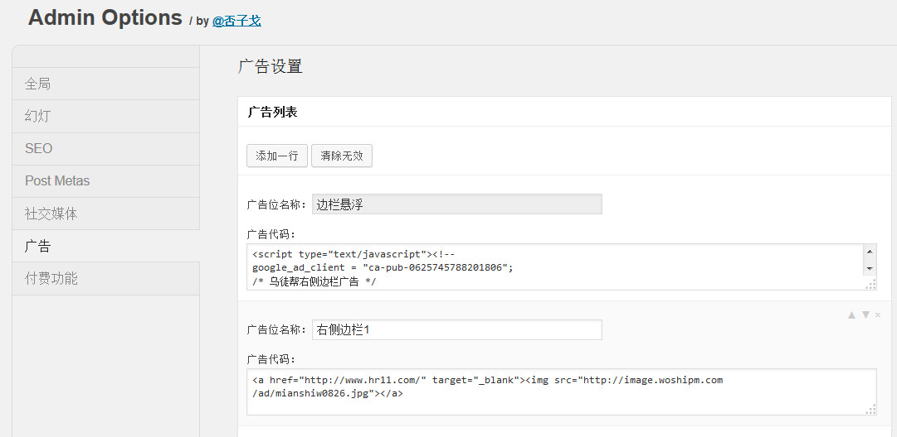

不探讨什么是异步加载了，总之它一方面让你的网页加载更快，另一方面或许还能给手机用户省流量。
上面提到的图片延时加载其实也可以算作异步加载的一种设计。
我在主题中充分考虑到了异步加载的重要性，所以从一开始就是这么去做的，下面举简单的例子来说明：
前面已经提到了边栏悬浮是怎么回事。但是是否有必要每次都加载悬浮的脚本代码呢？显然有的时候我们的网页里面没有用到这个功能，所以没有必要加载这部分代码。因此，我做了一个判断，加入存在fixed-sidebar这个区域，才加载插件脚本文件。
if($('#fixed-sidebar').length > 0 && $(window).width() > _options_.response_phone_width) {
$('#load-page-scripts').before('<script src="' + _options_.template_url + '/js/fixed-widget.js">\x3C/script>');
$.fixedwidget({
fixedObj : '#fixed-sidebar',
bottomObj : '#footer',
fixedPos : 10
});
}
这种方法起到了这么几种好处：1.如果不需要悬浮边栏，就可以不加载插件脚本，节省流量和打开网页的时间。2.让其他的脚本更早加载，因为如果一旦把插件脚本文件直接在html中引用，就会导致网页加载到这里的时候卡壳。3.代码更优雅，修改和阅读更方便。
注：fixed-widget.js是我个人开发的jQuery插件，这是第一次公开使用。
广告是比较麻烦的，因为大部分广告代码是js代码，页面加载这里的时候，常常会卡住。GD优雅的利用异步加载解决了这个问题。
在后台，你可以自己定制自己的广告，如下图：

在前台只需要使用一个短代码，即可调用对应的广告代码。而且这个短代码在widget_text中也照样可以用。
[ad name="边栏悬浮"]
你可以体验http://green.demo.utubon.com的效果，在边栏的浮动区域有一个谷歌广告，但是如果你仔细看HTML源代码，就会发现其实这个广告的脚本代码在页面的底部，因此页面加载的时候，顺利跳过了这个广告，直到页面加载完，才显示广告。
无论把异步加载做的多好，想要让网站打开速度秒秒钟，唯一的办法还是提高基础设施建设，光靠代码性能，根本无法弥补服务器、宽度等带来的伤害。这两天国际线路又抽风，演示站打开速度好慢……